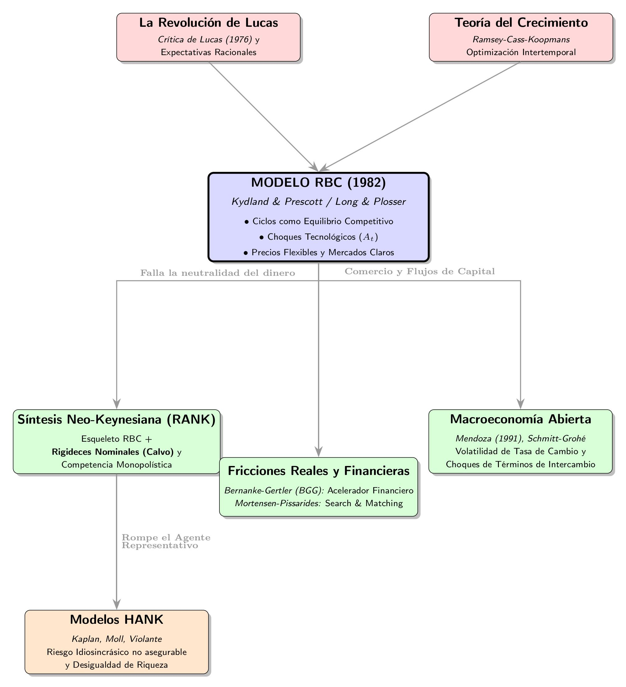

Modelos de Equilibrio General Estocásticos
Examen Propio Sobre el Etendimiento Detras de la Macroeconomia Moderna
1 Introducción a la Dinámica Macroeconómica
El estudio de los Modelos de Equilibrio General Dinámico Estocástico (DSGE) surge de la necesidad de examinar las bases del consenso macroeconómico actual. Su marco matemático se cimenta en la metodología del ciclo económico real desarrollada por Finn E. Kydland y Edward C. Prescott en su artículo “Time to Build and Aggregate Fluctuations” (Kydland and Prescott 1830)1, la cual fue posteriormente enriquecida por la síntesis neokeynesiana. No obstante, al constituir el núcleo de la ortodoxia macroeconómica, su hegemonía exige un debate crítico que incorpore las objeciones formuladas por escuelas heterodoxas. En este sentido, este estudio analiza la trayectoria de los modelos estocásticos de equilibrio general desde los esquemas RBC originales hasta sus extensiones neokeynesianas, poniendo especial énfasis en sus restricciones teóricas y en el valor de integrar enfoques heterodoxos para profundizar en la comprensión de la macroeconomía contemporánea.
Si bien Kydland and Prescott (1830) presentan la formalización matemática que permite entender a los ciclos en la economía como una respuesta a los choques exógenos y no como una representación de un mecanismo del mercado, no es hasta 1988 que se consolida el paradigma neoclásico con la estandarización y simplificación del modelo que llevan a cabo Robert King, Charles Plosser y Sergio Rebelo (King, Plosser, and Rebelo 1988), conocido como KPR.
2 El Debate Teórico: El Origen de las Fluctuaciones
Es importante presentar la discusión sobre el entendimiento del origen de las fluctuaciones a partir del tipo de choque, puesto que se puede entender que estas pueden darse por un choque de demanda o por un choque de oferta (choque exógeno). La diferencia de origen hace que los movimientos de variables económicas tan importantes como producción y precios se muevan de formas diferentes:
- Ciclo de Oferta (Choque de PTF/Costos) ──> Producción y Precios se mueven en direcciones opuestas (Estanflación/Deflación expansiva).
- Ciclo de Demanda (Choque de Gasto/Monetario) ──> Producción y Precios se mueven en la misma dirección (Filosofía de curva de Phillips tradicional).
El paradigma de fluctuaciones generadas por un choque de oferta empieza a ganar la discusión en los años 70 cuando la crisis de los precios del petróleo genera un escenario de estanflación que contradice la teoría detrás de la curva de Phillips tradicional.
Bajo este punto de vista de la oferta, las fluctuaciones son óptimas y eficientes; el mercado se ajusta de inmediato a las nuevas realidades tecnológicas. Mientras que desde la demanda, las fluctuaciones provocan ineficiencias (desempleo involuntario) que requieren políticas de estabilización del gobierno. Esta ruptura teórica sigue hasta nuestros tiempos y separa a la economía entre ortodoxos y heterodoxos o, más concretamente, neokeynesianos y postkeynesianos.
3 Raíces Históricas y Evolución del Pensamiento
Para entender el lugar del modelo RBC, es fundamental observar sus raíces y ramificaciones (ver Figura 1). El modelo toma como base la optimización intertemporal de la Teoría del Crecimiento (Ramsey-Cass-Koopmans) y la Revolución de las Expectativas Racionales -Crítica de Lucas- (Lucas 1976).

La premisa que postula Lucas (1976) ataca la macroeconomía tradicional de los años 60: es ingenuo predecir los efectos de una política económica utilizando relaciones estadísticas observadas en el pasado. Cuando el gobierno cambia sus políticas, los agentes económicos (familias y empresas) modifican sus expectativas y comportamientos. Por lo tanto, los parámetros estadísticos cambian por completo.
Lo anterior obligó a la macroeconomía a buscar microfundamentos. Los modelos ya no podían basarse en ecuaciones agregadas arbitrarias, sino que se tuvo que modelar a partir de los parámetros estructurales profundos de la economía (preferencias de los consumidores, tasa de descuento intertemporal y restricciones tecnológicas), los cuales no cambian ante modificaciones de política y que son recogidas tanto por los modelos RBC como los Neokeynesianos actuales, ya que estos incorporan expectativas racionales para blindarse contra la Crítica de Lucas.
La evolución de la optimización intertemporal se construyó a través de tres grandes hitos históricos:
- Modelo de elección intertemporal (Irving Fisher, 1930): Establece que las familias deciden su consumo basándose en sus ingresos totales esperados a lo largo de su vida.
- Optimización dinámica (Frank Ramsey, 1928): Introduce familias con horizontes infinitos (dinastías altruistas) que maximizan una función de utilidad intertemporal descontada.
- Hipótesis del Ciclo de Vida y del Ingreso Permanente (Modigliani, 1954; Friedman, 1957): Concluyen que los agentes buscan suavizar su consumo a lo largo de los años.
4 Fundamentos de la Teoría de Ciclos Económicos Reales (RBC)
¿Qué impulsa los ciclos económicos? A diferencia de la visión Keynesiana, la teoría de los Ciclos Económicos Reales (RBC), fundamentada por Kydland and Prescott (1830), propone que:
- Los ciclos son la respuesta óptima y eficiente de los agentes racionales ante cambios en el entorno.
- El impulsor principal son los Choques Tecnológicos o variaciones en la Productividad Total de los Factores (PTF).
- Los precios y salarios son perfectamente flexibles, asegurando el vaciado continuo de los mercados.
4.1 Microfundamentos y el Modelo KPR Determinista
Para modelar esta dinámica, utilizamos un enfoque de equilibrio general estocástico dinámico (DSGE) con agentes representativos. En el modelo determinista básico (basado en King, Plosser, and Rebelo (1988)), los agentes conocen el futuro perfectamente y la productividad \(A\) es constante.
- Producción: \[Y_{t}=AK_{t}^{\alpha}N_{t}^{1-\alpha}\]
- Ecuación de Euler (Ahorro/Consumo): \[\frac{1}{C_{t}}=\beta\frac{1}{C_{t+1}}(1-\delta+r_{t+1})\]
- Oferta Laboral: \[\phi\frac{1}{1-N_{t}}=\frac{w_{t}}{C_{t}}\]
4.2 Introduciendo el Ruido: El Modelo Estocástico
Para analizar verdaderos ciclos económicos, transformamos la productividad \(A\) en una variable aleatoria que sigue un proceso autorregresivo de primer orden \(AR(1)\):
\[\log(A_{t})=(1-\rho)\log(A_{ss})+\rho\log(A_{t-1})+\epsilon_{t}\]
Donde \(\epsilon_{t}\) representa la sorpresa o choque tecnológico. A través de las Funciones de Impulso Respuesta (IRF) generadas en Dynare, evaluamos qué sucede ante un aumento inesperado del 1% en la tecnología: el Producto (\(Y\)) y Empleo (\(N\)) aumentan de inmediato, la Inversión (\(I\)) sube agresivamente, y el Consumo (\(C\)) aumenta en menor proporción debido al suavizamiento intertemporal.
4.3 Estimación Empírica: Método de Momentos Simulados (SMM)
Para evitar calibraciones arbitrarias, empleamos datos reales mediante el Método de Momentos Simulados (SMM). Tras limpiar y procesar los datos cíclicos, la estimación arrojó parámetros estructurales como una persistencia del choque (\(\rho_A\)) de 0.99 y una volatilidad (\(\sigma_{\epsilon}\)) de 0.13% trimestral.
El ajuste de las varianzas simuladas contra los datos empíricos mostró lo siguiente (ver Tabla 1):
| Variable | Varianza Dato Real | Varianza Modelo RBC | Evaluación |
|---|---|---|---|
| PIB (\(Y\)) | 0.00010 | 0.00009 | ¡Excelente! |
| Consumo (\(C\)) | 0.00004 | 0.00004 | ¡Excelente! |
| Empleo (\(N\)) | 0.00008 | \(\approx 0.00\) | Falla |
Scripts de Estimación y Limpieza de Datos: 📊 Ver
Convertir_datos.m⚙️ VerRBC_SMM.mod
5 De la Fricción Cero a la Realidad Estructural: La Necesidad de Nuevos Paradigmas
A pesar de su elegancia matemática, la estimación del modelo RBC básico revela una falla empírica ineludible: es incapaz de replicar la alta volatilidad del empleo observada en los datos, como se evidenció en la Tabla 1. El paradigma RBC asume precios y salarios perfectamente flexibles, garantizando un vaciado continuo de los mercados. Sin embargo, la evidencia empírica contradice este supuesto de ajuste instantáneo. Para reconciliar la teoría con la realidad, es imperativo abandonar la noción del agente representativo puro y el vaciado instantáneo, introduciendo fricciones tanto en las decisiones de consumo (restricciones de liquidez) como en el mercado de bienes (rigideces nominales).
5.1 Evidencia Empírica contra el Agente Representativo: Restricciones de Liquidez en Colombia
Resulta pertinente abordar esta discusión porque la teoría neoclásica del consumo, desarrollada por autores ya mencionados como Fisher, Modigliani y Friedman, que sostienen que los hogares suavizan su consumo a lo largo del tiempo con base en su ingreso permanente, de modo que las fluctuaciones transitorias del ingreso no deberían afectar significativamente sus decisiones de consumo. Sin embargo, la evidencia para economías emergentes como Colombia sugiere la existencia de importantes restricciones financieras que limitan este comportamiento. En este contexto surge una pregunta central: ¿qué proporción de los hogares colombianos consume de la mano a la boca, dependiendo principalmente de su ingreso corriente?
Con el propósito de aportar evidencia a este debate, se analiza la validez de la hipótesis de optimización intertemporal para el caso colombiano. Mediante la estimación de un Modelo de Corrección de Errores Vectorial (VECM) y el uso de instrumentos exógenos —los precios internacionales del petróleo y la tasa de cambio— se encuentra que el consumo de los hogares colombianos presenta una sensibilidad extrema al ingreso corriente (\(\lambda > 1\)), resultado que cuestiona la capacidad de suavización del consumo postulada por la teoría neoclásica. En esta presentación se expondrán únicamente las principales conclusiones del estudio, invitando al lector a examinar críticamente los resultados y a contrastarlos con evidencia adicional.2
5.1.1 Análisis de Variables y Procesos de Transformación
La siguiente tabla resume la base de datos construida, detallando la justificación de cada variable, su transformación y la fuente de origen. Se aplicó el filtro X-13ARIMA-SEATS para corregir la estacionalidad de todas las series y se hiceron las debidas interpolaciones para permitirme trabajar con datos trimestrales (ver Tabla 2).
| Variable | Rol Económico | Transformación / Proceso | Fuente |
|---|---|---|---|
| Consumo (\(C\)) | Variable Dependiente | Logaritmo, Filtro X-13 (SA) | DANE (CNT) |
| Ingreso Disp. (\(Y\)) | Explanatoria Principal | Logaritmo, Filtro X-13 (SA), Deflactado IPC | Banco de la República/ DANE |
| PIB Constante | Robustez | Logaritmo, Filtro X-13 (SA) | DANE |
| Tasa Int. Real (\(r\)) | Control Financiero | Ecuación de Fisher, Filtro X-13 (SA) | Superfinanciera |
| Petróleo (USD) | Instrumento (Shock) | Logaritmo, Primera diferencia (\(\Delta\)) | Investing |
| Tasa de Cambio | Instrumento (Shock) | Logaritmo, Primera diferencia (\(\Delta\)) | Banco de la República |
Nota: Todas las series fueron ajustadas por estacionalidad (SA) usando el filtro X-13ARIMA-SEATS para eliminar el ruido calendario.
5.1.2 Presentación de Resultados: Modelos de Sensibilidad
A continuación se presentan las estimaciones del Modelo de Corrección de Errores Vectorial (VECM) mediante Variables Instrumentales (IV). El objetivo es identificar la sensibilidad del consumo de los hogares frente a variaciones en la actividad económica, corrigiendo los posibles problemas de endogeneidad mediante el uso del precio internacional del petróleo y la tasa representativa del mercado (TRM) como instrumentos exógenos. El parámetro de interés es la elasticidad de corto plazo (\(\lambda\)), la cual mide la respuesta del consumo ante cambios en el ingreso corriente o en el producto.
La Tabla 3 resume los resultados de dos especificaciones. El Modelo 1 utiliza la variación del ingreso disponible como principal variable explicativa, mientras que el Modelo 2 reemplaza esta variable el Producto Interno Bruto (PIB), con el propósito de evaluar la robustez de los resultados utilizando una medida agregada de la actividad económica.
| Variable / Estadístico | Modelo 1: Ingreso Disp. | Modelo 2: PIB |
|---|---|---|
| Intercepto | 0.0313 | 0.0421 |
| (0.0215) | (0.0214) | |
| \(\Delta\) Ingreso / PIB (\(\lambda\)) | 1.1640*** | 0.7292*** |
| (0.2851) | (0.1927) | |
| ECT (Término Corrección) | -0.8282*** | -0.4038** |
| (0.1680) | (0.1844) | |
| Tasa Interés Real | -0.0014 | -0.0018 |
| (0.0010) | (0.0011) | |
| Estadísticos de Diagnóstico (p-values) | ||
| Wald Test (Model Fit) | < 0.001*** | < 0.001*** |
| Weak Instruments Test | 0.0332** | 0.0110** |
| Wu-Hausman Test (Endogeneidad) | 0.8968 | 0.7567 |
| Sargan Test (Sobreidentificación) | < 0.001*** | < 0.001*** |
| Observaciones | 40 | 40 |
| R² Ajustado | 0.6638 | 0.6314 |
Nota: Errores estándar en paréntesis. Significancia: * p<0.1, ** p<0.05, *** p<0.01. La prueba de Weak Instruments se evalúa sobre la significancia de los instrumentos en la primera etapa. El Test de Sargan evalúa la validez de los instrumentos excluidos.
Los resultados obtenidos permiten concluir que, en el contexto colombiano (2016-2026), el consumo privado exhibe una sensibilidad al ingreso corriente significativamente alta. Al utilizar el ingreso disponible como variable explicativa, se estimó una elasticidad de corto plazo de \(\lambda=1.164\) (\(p<0.01\)), lo que indica que, ante un choque positivo en el ingreso, el consumo de los hogares se expande de manera más que proporcional. Este hallazgo constituye evidencia empírica robusta en contra de la hipótesis de suavizamiento del consumo sugerida por la teoría del ingreso permanente, posicionando a las restricciones de liquidez como un determinante estructural del comportamiento del consumidor nacional.
En contraste, al sustituir el ingreso disponible por el PIB, la elasticidad se ajusta a \(\lambda=0.729\) (\(p<0.01\)). Aunque la magnitud es menor, su significancia estadística ratifica el carácter pro-cíclico del consumo frente a la actividad económica general. La discrepancia en los coeficientes subraya la importancia metodológica de utilizar el ingreso disponible bruto como medida de la restricción presupuestaria real, ya que esta variable captura de forma más precisa el flujo de recursos efectivamente percibido por las familias, en comparación con el producto agregado3.
La dinámica de ajuste al equilibrio, capturada por el término de corrección de error (ECT), ratifica la rapidez con la que los hogares colombianos reaccionan ante las desviaciones de su senda de largo plazo. La velocidad de ajuste del 83 % (Modelo 1) sugiere un mecanismo de respuesta inmediata, característico de agentes que, al no poseer activos de reserva o acceso fluido al crédito, se ven obligados a ajustar su consumo de manera cuasi-instantánea ante cualquier variación en su flujo de ingresos.
Si bien las pruebas de diagnóstico respaldan la especificación mediante la significancia conjunta del modelo (Wald test), el rechazo de la hipótesis nula en la prueba de Sargan indica la presencia de sobreidentificación, un fenómeno recurrente en modelos macroeconómicos donde las variables instrumentales (precios del petróleo y TRM) ejercen efectos directos sobre el consumo por canales alternos al ingreso. No obstante, dada la estabilidad del coeficiente \(\lambda\) ante distintas especificaciones y el cumplimiento de las condiciones de exogeneidad (Wu-Hausman), se concluye que los resultados son robustos.
En suma, la evidencia presentada sugiere la necesidad imperativa de avanzar hacia modelos macroeconómicos que incorporen agentes heterogéneos y fricciones financieras (ver Figura 1). La realidad económica colombiana dista del agente representativo neoclásico; por el contrario, la existencia de una masa crítica de hogares con restricciones de liquidez sugiere que las políticas públicas deben considerar la vulnerabilidad de estos agentes, cuyo consumo está sujeto a la disponibilidad inmediata de ingresos, anulando su capacidad de suavizamiento intertemporal y amplificando los efectos de los choques económicos sobre la demanda agregada. Es decir, se debe romper con el agente representativo, pero es una discusión que se llevara acabo mas adelante bajo los postulados de los modelos de HANK.
6 Solución a la Rigideces Laborales
Una de las grandes críticas a los modelos RBC radica en su modelación poco realista del mercado laboral, especialmente cuando se aplica a economías en desarrollo como la colombiana. Este debate se aborda formalmente a partir de los elementos conceptuales expuestos en la sección dedicada a los modelos de búsqueda y emparejamiento (ver Fricciones, Informalidad y Dinámica Laboral:La Imperativa Necesidad de los Modelos de Búsqueda y Emparejamiento en el Análisis del Mercado Laboral Colombiano.). Partiendo de la base de que el lector revisará dicha sección para comprender la necesidad de implementar estos modelos en la evaluación de políticas laborales pasadas, presentes y futuras, procedemos a exponer nuestra propia perspectiva sobre esta herramienta.
Es fundamental señalar que los modelos RBC asumen el vaciado simultáneo del mercado laboral, lo que genera un problema de consistencia teórica, ya que la omisión de fricciones se aleja significativamente de la realidad observada. Asimismo, el enfoque RBC define el desempleo como un fenómeno puramente voluntario —lo cual constituye un sesgo importante—, mientras que el desempleo real debe entenderse como un equilibrio ineficiente donde las vacantes y los desempleados no coinciden de manera inmediata. Más allá de esto, es posible indagar en las razones subyacentes a esta falta de emparejamiento; en este punto cobran relevancia las críticas estructurales que conciben al mercado de trabajo como un reflejo de la demanda efectiva. Bajo esta visión alternativa, el núcleo del análisis consiste en entender cómo las decisiones de inversión de los empresarios, impulsadas por los animal spirits, repercuten en el empleo, demostrando que el mercado laboral se ajusta en función de la demanda agregada y no solo por factores de oferta.
A partir de lo anterior, es necesario aclarar que, tradicionalmente, estos enfoques teóricos se han construido de manera segregada. El modelo de búsqueda y emparejamiento se ha consolidado como una herramienta especializada en capturar los flujos y las fricciones del mercado laboral, mientras que los modelos basados en rigideces de precios y salarios (de corte neokeynesiano) se han diseñado primordialmente para analizar la transmisión de la política monetaria.
No obstante, la macroeconomía contemporánea ha avanzado hacia la integración de ambos mundos mediante los modelos Neokeynesianos con Fricciones de Búsqueda (conocidos en la literatura como modelos NK-DMP). Esta fusión resulta fundamental para economías como la colombiana, ya que permite evaluar simultáneamente cómo las rigideces nominales del mercado monetario interactúan con las fallas estructurales del mercado de trabajo, tales como el desempleo friccional, los costos de contratación y los procesos de negociación salarial. Sin esta convergencia metodológica, cualquier análisis de política macroeconómica corre el riesgo de subestimar el impacto que los choques agregados o monetarios tienen sobre el bienestar de los trabajadores y la persistencia de la informalidad laboral.
7 Representación Matemática: Hacia la Síntesis Neokeynesiana
Dado el fallo empírico del modelo RBC para replicar el mercado laboral y la evidencia de fricciones en el consumo, procedemos a complejizar el marco introduciendo rigideces de precios. En este caso ya hay un sección en donde se desarrolla matematicamente un modelos con Curvas de Phillips Neokeynesianas (ver Modelo Neokeynesiano con rigideces de precios.) (Calvo 1983; Rotemberg and Woodford 1995)
| Característica / Componente | Modelo KPR / RBC Determinístico (Base Proporcionada) | Modelo Neokeynesiano con Rigideces de Precios |
|---|---|---|
| Estructura de Mercado | Competencia perfecta en todos los mercados (bienes y factores de producción). | Competencia perfecta en bienes finales (agregador) y competencia monopolística en bienes intermedios. |
| Rigideces y Fricciones | Flexible (sin fricciones nominales ni reales; los precios se ajustan instantáneamente). | Rigideces de precios mediante costos de ajuste cuadráticos tipo Rotemberg (\(\phi_q\)). |
| Agentes Económicos | Hogar representativo (consumo, ocio, acumulación de capital) y firmas perfectamente competitivas. | Hogares (consumo, oferta laboral, capital), Agregador (bienes finales) y Firmas intermedias (fijación de precios). |
| Bloque de Precios e Inflación | No existe inflación endógena ni dispersión de precios relativas; \(P_t = P\) o normalizado. | Incluye un Índice de Precios Agregado (media CES) y la Curva de Phillips Neokeynesiana (CPNK). |
| Costo Marginal (\(\text{MC}\)) | El costo marginal real iguala la relación marginal técnica o se simplifica por los precios de los factores competitivos. | El costo marginal (\(\text{MC}_t\)) actúa como un canal dinámico influenciado por los precios de los factores y el poder de mercado (\(\theta\)). |
| Decisión Dinámica de la Firma | Estática para la elección de factores y maximización de beneficios de corto plazo sin costos de fricción temporal. | Dinámica compleja (valor presente de beneficios futuros descontados estocásticamente incorporando costos de ajuste de precios). |
| Política Monetaria / Nominal | Ausente (al ser un modelo real puro sin dinero ni fricciones nominales). | Implícita a través de la formación de precios y la rigidez nominal que da holgura a efectos reales de la demanda. |
| Dinámica de Estado Estacionario | Determinada por la condición de Euler estándar: \(r^{ss} = \frac{1}{\beta} - (1-\delta)\) y markups constantes iguales a 1. | Modificada por el poder de monopolio (\(\frac{\theta}{\theta-1}\)) y la anulación de los costos de ajuste de precios (\(\pi = 1\)). |
El análisis comparativo entre el modelo Neokeynesiano desarrollado en las tandas anteriores y el modelo KPR / RBC determinístico provisto permite evidenciar las diferencias fundamentales en la modelación macroeconómica moderna, especialmente al transitar desde los supuestos de mercados perfectamente competitivos hacia estructuras con fricciones nominales y poder de mercado.
En primer lugar, el modelo KPR / RBC opera bajo un esquema de competencia perfecta en todos los mercados, donde los precios y salarios son totalmente flexibles y se ajustan de manera instantánea para vaciar los mercados. Su bloque analítico se fundamenta en las elecciones de un hogar representativo que maximiza su utilidad intertemporal sujeta a una restricción presupuestaria y a la ley de acumulación de capital, derivando en la clásica ecuación de Euler y en la condición intratemporal entre consumo y ocio. La solución de este sistema determinístico se aborda típicamente mediante técnicas de log-linealización alrededor de su estado estacionario, permitiendo representar la dinámica endógena a través de matrices de transición y analizar la estabilidad del sistema mediante los valores propios o el método de Blanchard-Kahn.
Por el contrario, el modelo Neokeynesiano introduce modificaciones estructurales sustanciales al dividir la producción en dos etapas: un sector de bienes finales que opera bajo competencia perfecta (el agregador) y un sector de bienes intermedios bajo competencia monopolística. La diferencia más notable radica en la incorporación de rigideces de precios a través de costos de ajuste cuadráticos (tipo Rotemberg). Esto impide que los precios se ajusten instantáneamente, lo que otorga a las empresas poder de mercado y da origen a un margen de beneficio (markup) variable que depende de la elasticidad de sustitución entre variedades.
En consecuencia, mientras que el modelo RBC carece de fricciones nominales y de un canal de política monetaria vinculado a la inflación, el modelo Neokeynesiano culmina en una relación clave para la política económica: la Curva de Phillips Neokeynesiana (CPNK). Esta ecuación vincula la inflación actual no solo con las expectativas futuras del costo marginal real (forward-looking), sino también con la inercia inflacionaria heredada del pasado debido a los costos de cambiar precios. De este modo, el análisis neokeynesiano extiende la macroeconomía de los ciclos reales al incorporar dinámicas nominales que explican por qué las fluctuaciones de la demanda agregada pueden tener efectos reales sobre la economía a corto plazo.
8 Conclusiones y Próximos Pasos
El recorrido metodológico y analítico desarrollado a lo largo de este examen permite extraer conclusiones fundamentales sobre el estado y la evolución de la macroeconomía moderna:
- La insuficiencia del paradigma puramente neoclásico (RBC): Si bien los modelos de Ciclos Económicos Reales (RBC), fundamentados en la optimización intertemporal y los microfundamentos de Kydland and Prescott (1830) y King, Plosser, and Rebelo (1988), ofrecen un marco analítico elegante para entender el suavizamiento del consumo ante choques tecnológicos de oferta, fallan empíricamente al no poder replicar la alta volatilidad del empleo y al asumir un vaciado de mercado instantáneo y continuo.
- La evidencia de restricciones financieras y de liquidez: El análisis empírico realizado para el caso colombiano (2016-2026) a través de un enfoque VECM demuestra que el consumo privado presenta una alta sensibilidad al ingreso corriente (\(\lambda > 1\)). Esto rechaza la hipótesis neoclásica de suavización del consumo mediante el ingreso permanente, evidenciando que una masa crítica de hogares se encuentra sujeta a restricciones de liquidez.
- La necesidad de fricciones nominales y estructurales: La incapacidad del agente representativo puro para capturar la realidad de economías emergentes impulsa la adopción de la Síntesis Neokeynesiana. La introducción de la competencia monopolística y las rigideces de precios —modeladas mediante costos de ajuste tipo Rotemberg— da origen a la Curva de Phillips Neokeynesiana (CPNK), conectando de manera efectiva las decisiones de precios con la inercia inflacionaria y las expectativas forward-looking.
- Hacia la integración de mercados laborales heterogéneos: Las fricciones del mundo real exigen abandonar la visión del desempleo puramente voluntario del enfoque RBC. La integración de los modelos de búsqueda y emparejamiento (Search and Matching) con la macroeconomía de rigideces nominales (modelos NK-DMP) se vuelve imperativa para evaluar adecuadamente el desempleo estructural, la informalidad y los canales de transmisión de la política económica en economías en desarrollo.
8.1 Próximos Pasos en la Investigación
Los resultados y limitaciones encontrados abren la puerta a las siguientes extensiones de modelado macroeconómico: - Incorporación de fricciones financieras y agentes heterogéneos (HANK): Avanzar más allá del agente representativo para modelar explícitamente a los hogares con restricciones de liquidez frente a aquellos con acceso al crédito. - Análisis de economía abierta: Ampliar el marco para evaluar choques de términos de intercambio, volatilidades de la tasa de cambio y regímenes cambiarios en economías pequeñas y abiertas como la colombiana. - Evaluación crítica con la heterodoxia: Mantener un puente de diálogo metodológico que incorpore objeciones sobre el rol de la demanda efectiva y los animal spirits en la determinación del ciclo económico.
References
Footnotes
El texto describe un enfoque que introduce la optimización intertemporal de los agentes, los choques tecnológicos estocásticos y técnicas de calibración, apartándose de la econometría tradicional.↩︎
En este apartado esta el Scripts y los datos para la replica del modelo y se invita al planteamineto mas microeconomico del mismo, puesto que trabajao desde un punto de vista agregado: 💻 Ver Datos Analisis del Consumo en Colombia (2016-2026):
RBC_Estocastico.mod💻 Ver Script Analisis del Consumo en Colombia (2016-2026):RBC_Estocastico.mod↩︎Se debe entender que en el ingreso disponible ya fue descontado el pago de impuestos y de finaciación de loss hogares, por lo que este hace una referencia mas fiel a lo que las familias utilizan para el consumo.↩︎